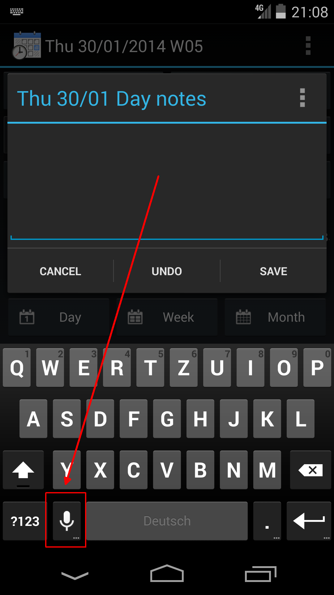

Voice input to text notes
Android supports "Voice input" on all text input fields - just tap the "Speaker" icon on your keyboard.

System settings
If you don't have the "Voice input" option enabled on your keyboard you'll need to check your Android main system settings.
Note these options may look different depending on Android version and device type - the screenshots below are from a Android 4.4 Nexus device